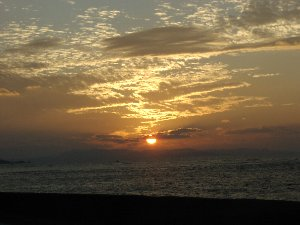
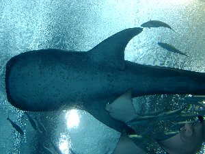
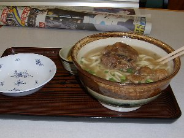
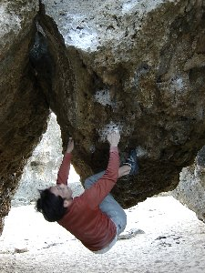
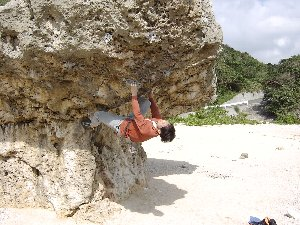

沖縄クライミングツアー | ２００２年１２月２９日〜２００３年１月５日 |
|---|---|
|  |  |
| １２月２９日 本州(内地)へ別れを告げて、友人２人と琉球への岩遊び＆旅。 琉球の地へ足を下ろし、見上げると秋風。 いや、今日本は冬だったはず。 雑踏の那覇市内を背にレンタカーで北へ向かう。 ３時間も走ると本土最北端に程近い国頭村 辺土名へ到着。腹ペコの僕達は選択肢の無いこの町で、角にぽつんとたつペルー料理店に吸い込まれる。 カウンターとテーブル席２つだけの店内で、マスターの友人の弾き語りとペルー料理を酒の肴に。マスターとその友人Ａは僕らよりかなり年配であったが非常にフレンドリーで、ギターに多少覚えのある私には三線をあれこれと教えてくれる。 そんな流れの中、僕らともう一組の客は彼らの忘年会に突如、招待される事になる。 | |
 |  |
| Ａさんの愛車サーフへ６人乗り込み(定員オーバーの為、僕らは荷台へ）街灯から隔離された山奥のロッジへ・・・・・ ロッジはトランプの表裏の様に、外は暗闇と静寂 中は中年酔っ払い達のダンスホール。僕らの喉へ泡盛は幾度も流れていたが、常にグラスは表面張力に揺れる。 途中、若干２０歳のセミプロミュージシャンペアが里帰りで駆け付けてくれたり、中年親父達が三線を弾いたりで、ずっと音楽と酒まみれ。 きっと朝までこの忘年会は続いていただろうが、僕達は途中でタクシーで帰宅させてもらった。 ３０日 本土最北端の辺戸岬 ルートクライミング 慣れる程度に登る ３１日 国営沖縄記念公園海洋博公園(水族館 等) 観光 なっなんと、水槽は世界一？ 那覇市 国際通り ショッピング 買う振りして高級泡盛試飲 １、２日 具志頭村 ボルダリング トラバース課題の核心部、強烈力技ム−ブで自爆！！・・・鎖骨痛める ３日 玉泉洞王国村 観光 エイサーは感動っ ＶＥＲＹ ＧＯＯＤ！！ ひめゆりの塔 観光 悲しいよぅ(>_<) 首里城 観光 雨降ってるが、強風で傘 役立たず。 ４日 具志頭村 ボルダリング 風邪で熱と節々が痛む中、何故か自己最高グレード(１級 ※３撃)を完登 夜は３９度の熱で撃沈。酒が飲め無い悲しい夜(-_-メ) | |
|  |  |
| (旅中の生活) ８時 いつしか起きる-１０時 民宿を出発-１８時 民宿へ戻る-１９時 居酒屋へ-２３時 酔っ払っていつの間にか爆睡 (沖縄のＢＥＳＴ３) ・クライミング (１．景色 ２．温い ３．凄いかぶり) ・土産 (１．泡盛＆いりちー ２．ちんすこう ３．プリントＴシャツ(有名なのは「海人(うみんちゅう)」「一撃」は珍しいかも)） ・DRINK(選定基準は”マジ？”) （１．泡盛 ２．シークゥワーサー100％ ３．ゴーヤジュース） ・FOOD(こちらは美味さ) （１．ソーキそば ２．フーチャンプルー ３．ぐるくんの唐揚） | |
 |  |
| ・Badな面 （１．生意気な雨 ２．気まぐれな天気 ３．路駐） ・GOODな面 （１．コスト ２．暖かさ ３．海の色） ・番外編 他の店のお土産もついでに無料宅配させるバカ(俺) １月５日 琉球の地から足を上げ、名古屋の地を踏むと一夜の夢の様なこの旅から目を覚ました。 昨日の３９度の熱がまるでこの旅の目覚し時計みたいに、家路へ着いた時には３６度。 また、日常の雑踏の中で疲れたら、あののどかな風に吹かれに行こう。 (最後に一言) 沖縄はクライマーにはルーフボルダリング天国。一般人にも美しい海とのんびりした空気また、色々なアクティビティーが楽しめます。 料理も美味くて安い。民宿も素泊まり２,０００円〜４，０００円で安い。 ここへ来ると内地へ戻るのも辛い？ | |
|  |  |